Solo exhibition
The World Smiles at Us

On the subject of polarity and the things which push and pull, the invisible forces of creation.
Two opposite sides of the same coin, that spin effortlessly which from afar seem like a sphere floating in space. I use filters to change the day into night and the night into day. Pure and adulterated, the path presents itself through the forest and city. Munching on sweet and sour gummy bears bought at the late night shop while a tire rolls through, slippery and sharp, drifting in the reflection.
The regular who works daily and the extra-ordinary (critic) who just looks on, they maintain the delicate balance by keeping us always a little off. A peepshow of some kind.
What am I going on about, neither this nor that, always some doubt on the endless grid of possibility. The image in this constant shuffling is pressed, a fragment of life is caught in thick paint and cotton paper.
Trapped and released with each attempt to interpret.
A dance with two left feet and two right shoes, in the spectre of the night as the World Smiles at us.
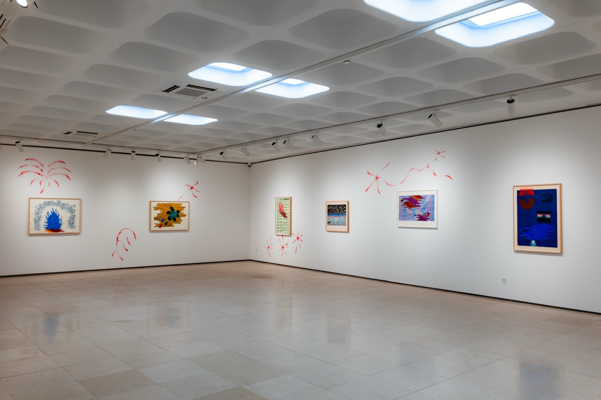
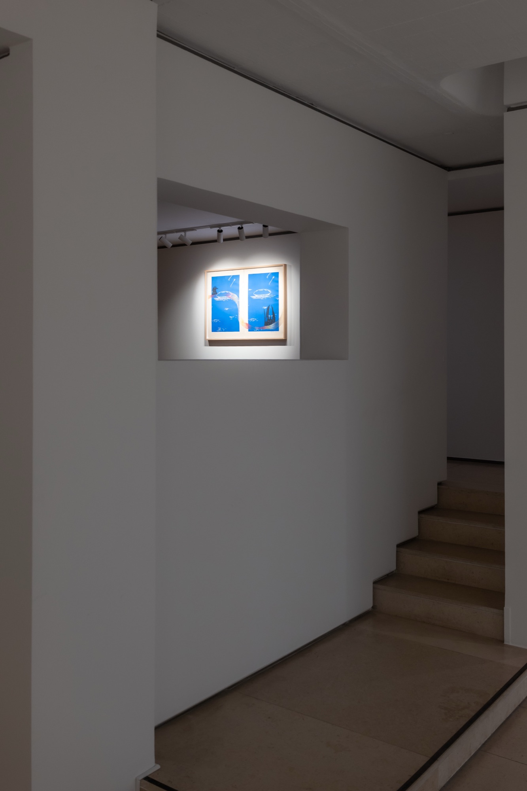
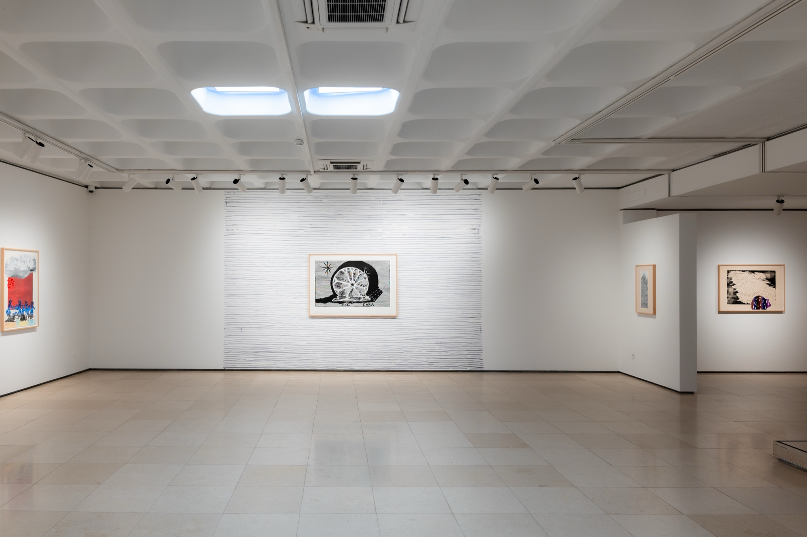
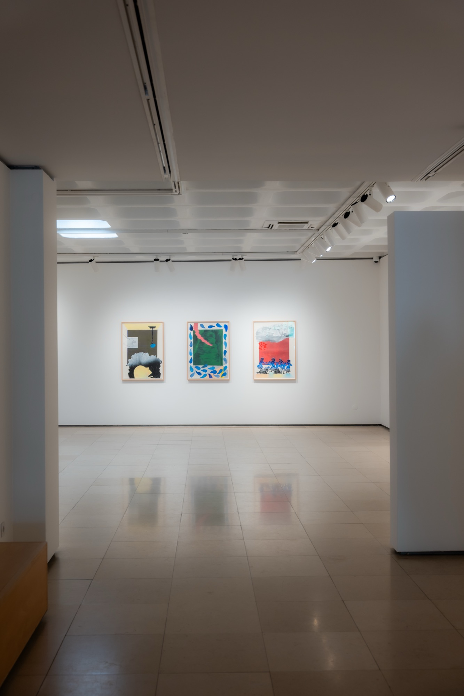
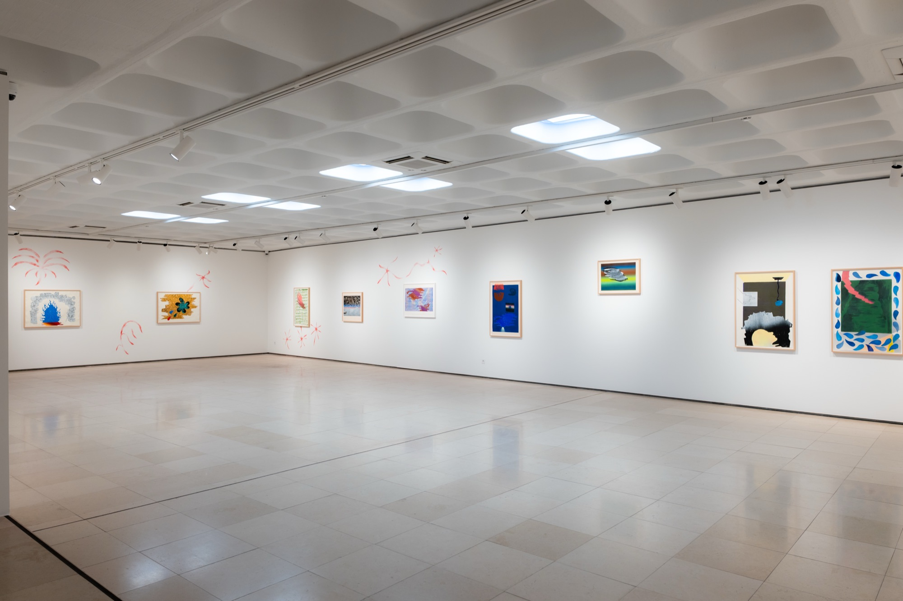
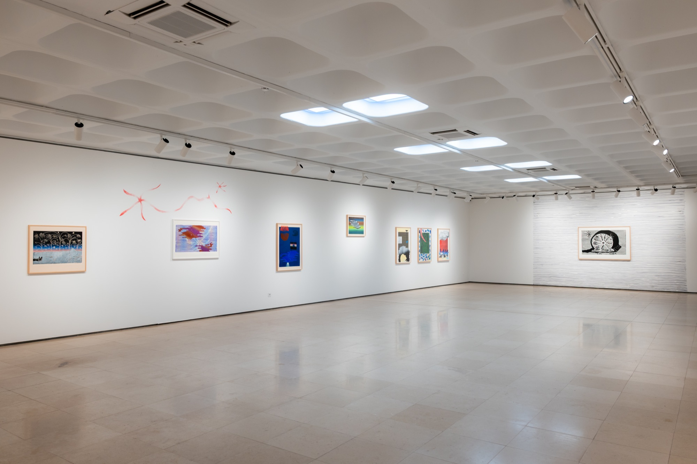
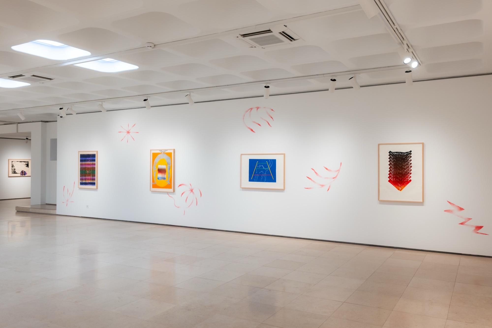
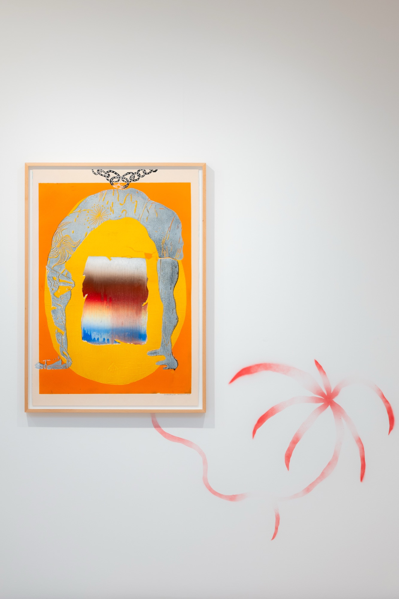
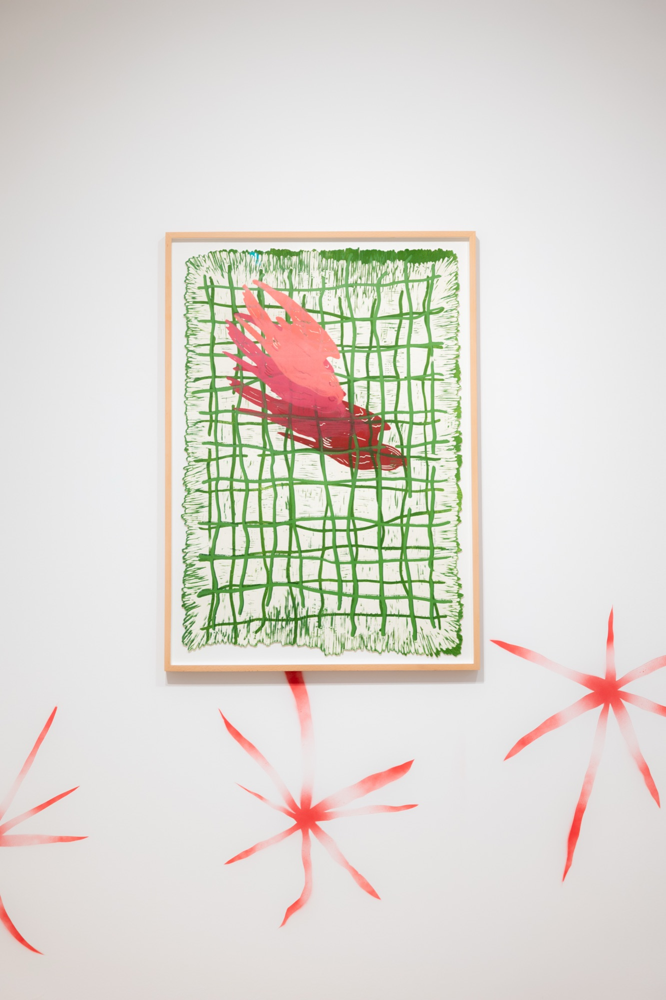
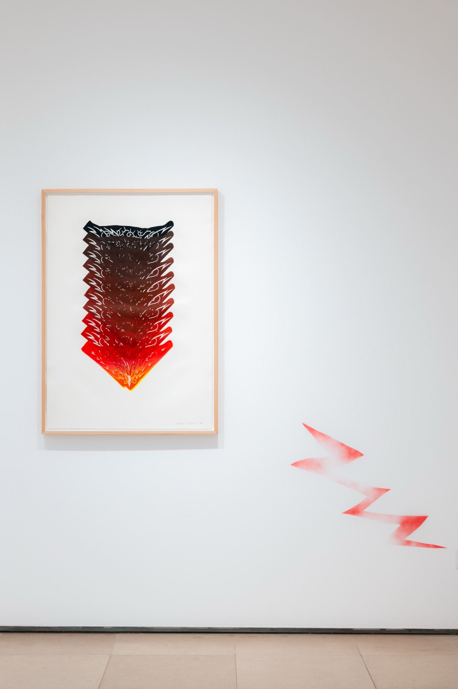
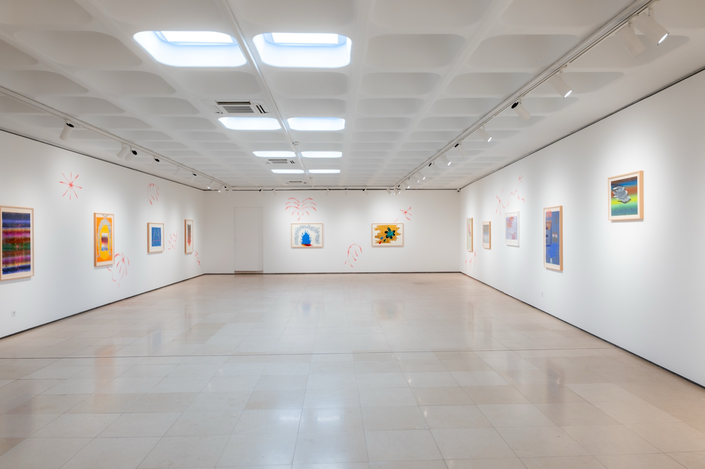
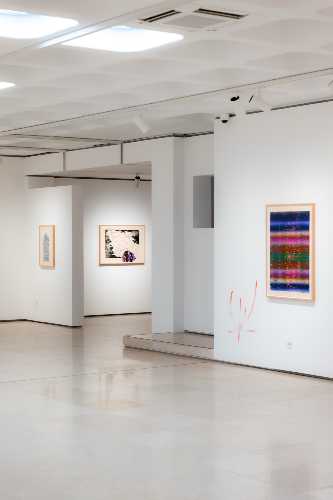
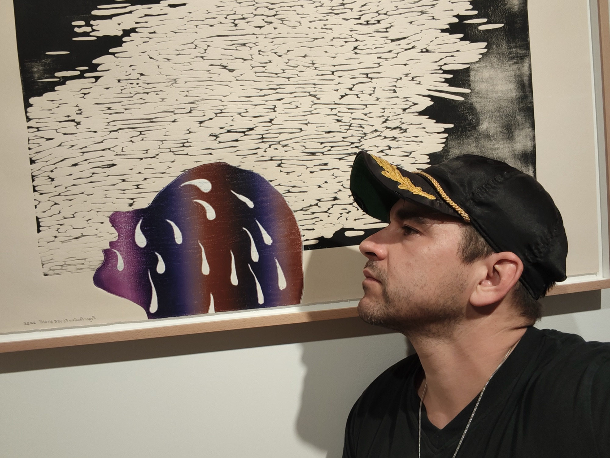
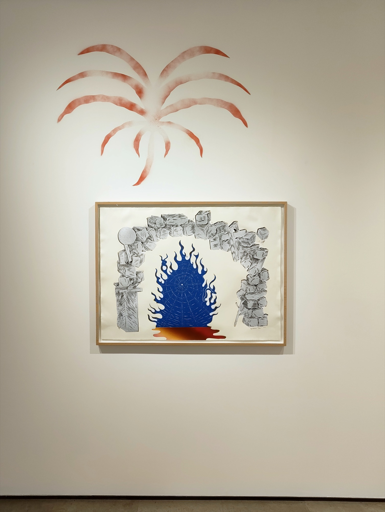
Works
- Myth of Er (Republic), 2025 Linocut on Fabriano 300g paper; 70 x 100 cm, ed. 4
- No Mo Fo Mo, 2025 Linocut on Fabriano 300g paper; 50 x 70 cm, ed. 5
- Fever Night, 2025 Linocut on Fabriano 300g paper; 70 x 100 cm, unique proof
- Piranesi, 2025 Linocut on Fabriano 300g paper; 70 x 100 cm, unique proof
- Caracol, 2025 Linocut on Hahnemühle 300g paper; 99 x 143 cm, ed. 4
- Family Portrait, 2025 Linocut on Fabriano 300g paper; 70 x 100 cm, unique proof
- Zigurat, 2025 Linocut on Fabriano Tiepolo 300g paper; 70 x 100 cm, unique proof
- Mind Games, 2025 Linocut on Fabriano Tiepolo 300g paper; 70 x 100 cm, unique proof
- Shutter Glitch, 2025 Linocut on Fabriano 300g paper; 50 x 70 cm, unique proof
- Deep Blues, 2025 Linocut on Fabriano 300g paper; 70 x 100 cm, unique proof
- Sometimes its ok, 2025 Linocut on Fabriano 300g paper; 70 x 80 cm, ed. 2
- Desert Island FM, 2025 Linocut on Fabriano 300g paper; 70 x 100 cm, ed. 2
- Grid Lock, 2025 Linocut on Fabriano 300g paper; 67 x 97 cm, unique proof
- Cool S, 2025 Linocut on Hahnemühle 300g paper; 74 x 105 cm, ed. 3
- Blue Flame, 2025 Linocut on Hahnemühle 300g paper; 76 x 105 cm, ed. 3
- Arschgeweih II, 2025 Linocut on Fabriano 300g paper; 70 x 100 cm, unique proof
- Rear View, 2025 Linocut and gouache on Fabriano Tiepolo 300g paper; 70 x 100 cm, ed. 6
- Tamagotchi, 2025 Linocut on Fabriano 300g paper; 70 x 100 cm, unique proof
- Olho no Fogão Pinochio, 2025 Linocut on Fabriano 300g paper; 70 x 100 cm, unique proof
- Recycling, 2025 Linocut on Fabriano 300g paper; 70 x 100 cm, unique proof
- Trophy, 2023 Linocut on Fabriano 300g paper; 50 x 70 cm, unique proof
- Layered Feelings, 2023 Linocut on Fabriano 300g paper; 50 x 70 cm, unique proof
- Glitzer Chains, 2022 Linocut and mixed media on Fabriano 300g paper; 50 x 70 cm, unique proof
- Lungs, 2022 Linocut on Fabriano 300g paper; 50 x 70 cm, unique proof
- Rainbow Pixels, 2022 Linocut on Fabriano 300g paper; 50 x 70 cm, unique proof
- Ribbon Clouds, 2022 Linocut on Fabriano 300g paper; 50 x 70 cm, unique proof
- Reach out, 2022 Linocut on Fabriano 300g paper; 50 x 70 cm, unique proof
- Vase and Ice, 2022 Linocut on Fabriano 300g paper; 50 x 70 cm, ed. 3
- Untitled, 2022 Linocut on Fabriano 300g paper; 50 x 70 cm, unique proof
- That Day, 2022 Linocut on Fabriano 300g paper; 50 x 70 cm, unique proof